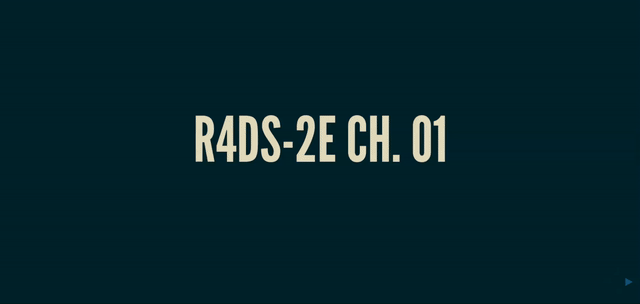

library(flashr)
flashcard("r4ds-2e01")flashr: Create Flashcards of Terms and Definitions
coding
R package
Make flashcards for learning R functions or other terms.
Are you learning R? Or teaching it? There are a lot of functions to keep track of. That’s why I developed the {flashr} package.
As an R user in the field of psychology, I was excited to read The Programmer’s Brain by Felienne Hermans because of the subtitle: “What every programmer needs to know about cognition”. This book applies what we know about cognitive psychology to coding.

There are many gems in the book. But one of the things that stuck with me was the suggestion that flashcards could be useful in learning coding by giving repetitive experience with terms and their definitions. This inspired me to create {flashr} to generate flashcards. With {flashr} you can create flashcard slides from existing decks or from data frames of your own terms and descriptions. The slides can be viewed in the RStudio viewer or saved as HTML files.
Building decks
Let’s say you or your students are learning R by reading R for Data Science (R4DS)1. In chapter 1 on data visualization, there are 14 functions referenced. Once you move on to chapter 3 on data transformation, there are 31 functions, 25 of which are new. By chapter 5, there are about 60 functions to know. That’s a lot! And some of them sound quite similar. Does dplyr::select() subset rows or columns? What about dplyr::filter()?
Keeping track of all of the new functions can be tricky. But flashcards can help. And if you’re using R4DS, you’re in luck because we’ve already created flashcards for each chapter in the book. And they’re baked into {flashr}. All you have to do is find the tag that references the chapter of interest and pass it to the flashcard() function. So if you want to build a flashcard deck of the functions referenced in the first chapter of R4DS, just type:

Finding decks
Where did "r4ds-2e01" come from? It’s a tag that represents the first chapter of the second edition of R4DS. To find it, you just have to list available flashcard decks with the list_decks() function. There are a lot of decks, so it helps to narrow down the list by using some pattern matching. For instance, if you’re interested in using chapters from the second edition of R4DS, you might try matching "2e" to focus only on that edition of the book.
list_decks(pattern = "2e")Available flashcard decks1. R4DS-2e Ch. 00 (r4ds-2e00)2. R4DS-2e Ch. 01 (r4ds-2e01)3. R4DS-2e Ch. 02 (r4ds-2e02)4. R4DS-2e Ch. 03 (r4ds-2e03)5. R4DS-2e Ch. 04 (r4ds-2e04)6. R4DS-2e Ch. 05 (r4ds-2e05)7. R4DS-2e Ch. 07 (r4ds-2e07)8. R4DS-2e Ch. 09 (r4ds-2e09)9. R4DS-2e Ch. 10 (r4ds-2e10)10. R4DS-2e Ch. 11 (r4ds-2e11)11. R4DS-2e Ch. 12 (r4ds-2e12)12. R4DS-2e Ch. 13 (r4ds-2e13)13. R4DS-2e Ch. 14 (r4ds-2e14)14. R4DS-2e Ch. 15 (r4ds-2e15)15. R4DS-2e Ch. 16 (r4ds-2e16)16. R4DS-2e Ch. 17 (r4ds-2e17)17. R4DS-2e Ch. 18 (r4ds-2e18)18. R4DS-2e Ch. 19 (r4ds-2e19)19. R4DS-2e Ch. 20 (r4ds-2e20)20. R4DS-2e Ch. 21 (r4ds-2e21)21. R4DS-2e Ch. 22 (r4ds-2e22)22. R4DS-2e Ch. 23 (r4ds-2e23)23. R4DS-2e Ch. 24 (r4ds-2e24)24. R4DS-2e Ch. 25 (r4ds-2e25)25. R4DS-2e Ch. 26 (r4ds-2e26)26. R4DS-2e Ch. 27 (r4ds-2e27)27. R4DS-2e Ch. 28 (r4ds-2e28)28. R4DS-2e Ch. 29 (r4ds-2e29)All of the available decks are listed in the flashr decks page. It includes both editions of R4DS, along with several of the awesome PsyTeachR books and a couple of miscellaneous decks. This site not only includes the tags that you can use to create your own versions of the decks but also has links to actual flashcard slide decks that you can browse through.
Customizing decks
One of the great things about flashcards is that you can either view terms and guess descriptions or view descriptions and guess terms. By default, flashcard() builds decks where you have to guess the descriptions from the terms. But you can easily switch that around with the termsfirst = FALSE argument.
flashcard("r4ds-2e01", termsfirst = FALSE)Or maybe you don’t want the package names cluttering up your decks. Just remove them with package = FALSE.
flashcard("r4ds-2e01", package = FALSE)What if you don’t like the default colors and fonts? You can change the slide theme with the theme argument, choosing from one of the available reveal.js themes. You can also override the font size and color with fontsize and fontcolor.
flashcard("r4ds-2e01", theme = "sky")
Creating decks
The {flashr} package was first published on CRAN in 2023. But version 0.2.0 includes functions that can help you build your own decks. What if there are other books besides R4DS or the PsyTeachR series that you want to build decks from? Do you have to go through and find all of the individual functions and write out all of the descriptions for those other books? Ugh…that sounds awful!
Well, maybe we can help. The extract_code() function lets you extract the contents of code blocks from R Markdown and Quarto documents. That can then be passed to extract_functions() to pull out all of the functions in that code. Once you have a vector of functions, they can be passed to build_functions_df() which makes a flashr-friendly data frame and even pulls descriptions from functions that are included in the flashr decks list of functions. Let’s try that with chapter 3 of Advanced R.
advr3_text <- "https://raw.githubusercontent.com/hadley/adv-r/refs/heads/master/Vectors.Rmd"
advr3_df <- advr3_text |>
extract_code() |>
extract_functions() |>
build_functions_df(fs = _, title = "Advanced R Ch. 3")
head(advr3_df, n = 5) term description package
2 as_tibble() coerce object into tibble tibble
3 as.Date() convert to date base
5 as.integer() coerce to integer base
7 as.numeric() coerce object to numeric base
9 attr() return or set individual attribute values base
title
2 Advanced R Ch. 3
3 Advanced R Ch. 3
5 Advanced R Ch. 3
7 Advanced R Ch. 3
9 Advanced R Ch. 3You can also very easily create your own data frame by passing a vector of function names to build_functions_df().
build_functions_df(fs = c("+", "filter", "aes", "extract_code"),
title = "Custom deck") term description package title
1 + addition base Custom deck
2 aes() create aesthetic mappings between data and plot ggplot2 Custom deck
4 filter() keep rows based on values of columns dplyr Custom deckNotice that, though “extract_code” is in our vector of functions, it does not show up in the data frame. That is because the extract_code() function is not in the flashr decks list of functions, so it does not have a description or package associated with it. If I want to include it in the data frame anyways (along with any other functions not on the list), I can just set omit = FALSE to include terms with missing descriptions. This could be useful if you want to export your data frame and fill in your own descriptions.
build_functions_df(fs = c("+", "filter", "aes", "extract_code"),
title = "Custom deck",
omit = FALSE) term description package
1 + addition base
2 aes() create aesthetic mappings between data and plot ggplot2
3 extract_code() <NA> <NA>
4 filter() keep rows based on values of columns dplyr
title
1 Custom deck
2 Custom deck
3 Custom deck
4 Custom deckOnce you have a data frame, you can pass it to flashcard() to build the deck.
flashcard(advr3_df)
Wrap-up
This was a short intro into how to use the {flashr} package to build flashcard decks. Though we focus on using it to learn R functions, {flashr} can be used to learn any terms and descriptions. You just have to create your own decks. More info is available at the package website, as well as the decks website. If you have new decks or functions to include or ideas on how to improve {flashr}, please submit an issue or reach out to us.

Footnotes
Note that here we refer to the second edition of R4DS. The first edition is still available, and flashcard decks are available at flashr decks.↩︎